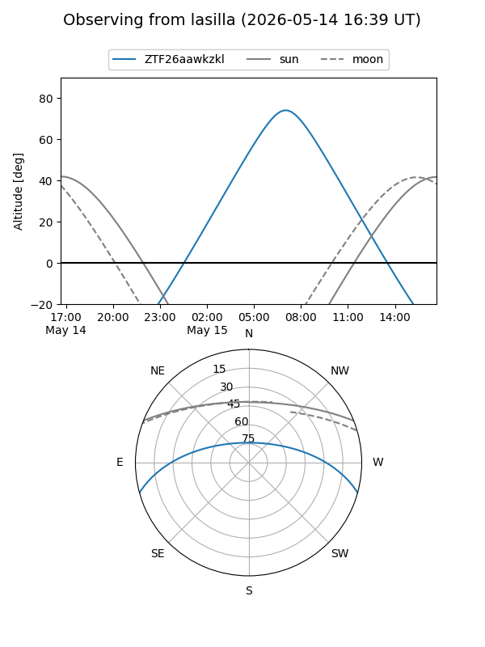
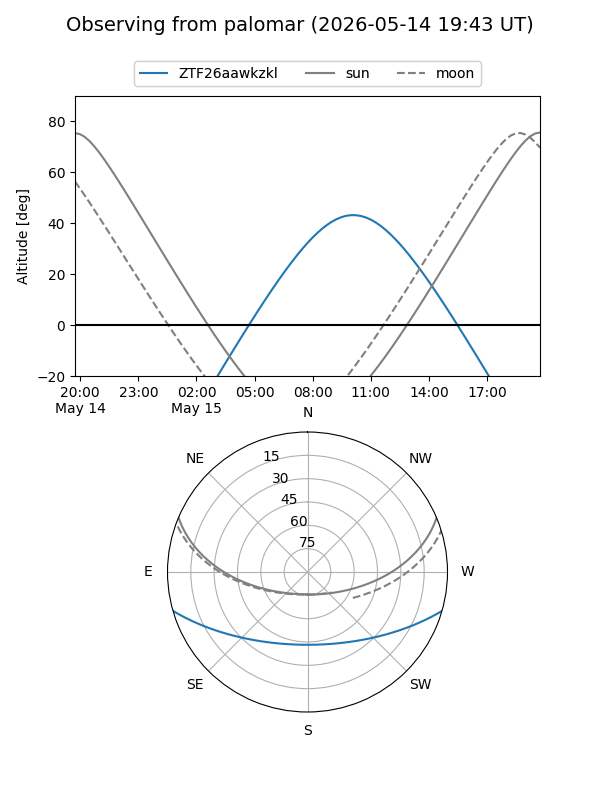

ZTF26aawkzkl
Target ZTF26aawkzkl at 2026-05-15 11:44
Aliases and brokers:
FINK: link
Lasair: link
ALeRCE: link
alt names
ZTF26aawkzkl (ztf,fink_ztf)
Coordinates:
equatorial (ra, dec) = 267.2391,-13.42467
equatorial (HMS+DMS) = 17:48:57.38,-13:25:28.80
galactic (l, b) = (13.7407,+7.30946)
Flags:
Photometry:
last ztfg=19.13
2 ztfg detections
Lightcurve
Visibility


Additional plots